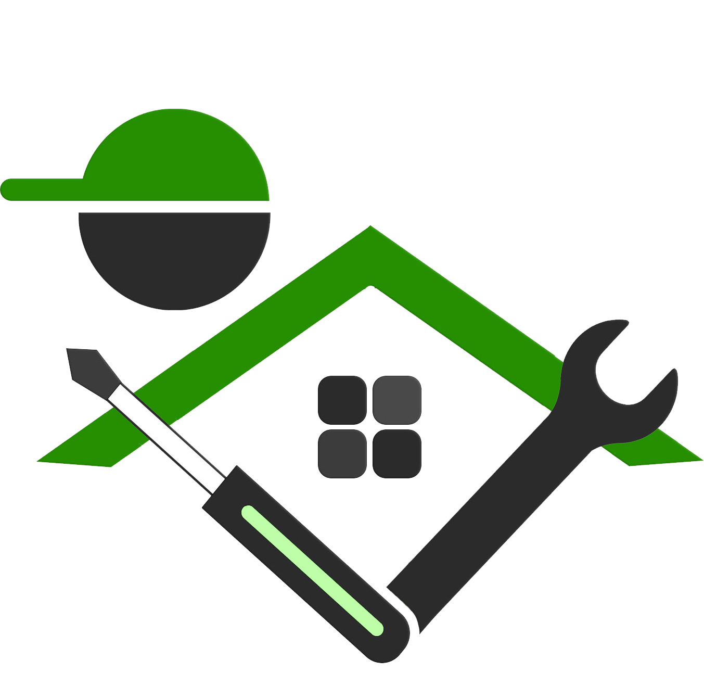

مزیت استفاده از خدمات تعمیرات ساید بای ساید چترسبز :
1) استفاده از برترین تعمیرکاران(سرویس کاران) و متخصصین در تعمیرات انواع ساید بای ساید
2) استفاده از لوازم و قطعات اصلی (اورجینال ) در تعمیرات ساید بای ساید
3) تمامی خدمات شرکت چترسبز دارای 100 روز گارانتی بی قید و شرط می باشد


چرا شما برای نصب، سرویس وتعمیرات لوازم خانگی چترسبز را انتخاب کنید ؟
مرکز تعمیرات لوازم خانگی چترسبز در استان تهران و البرز (کرج) در زمینه نصب، سرویس وتعمیرات انواع لوازم خانگی
(ساید بای ساید، ظرفشویی، یخچال، ماکروویو، جاروبرقی و کولرگازی) در خدمت شماست.
چترسبز قابل اعتماد ترین بهترین وسریع ترین خدمات ممکن را به شما ارائه خواهد کرد و بهترین گزینه برای انتخاب شما در استان تهران و البرز (کرج) میباشد
در صورتی که لوازم خانگی شما به هر دلیلی از جمله (نمایش کد خطا یا ارور، متوقف شدن یا سر و صدای زیاد و... ) دارای مشکل باشد، این مجموعه یکی از بهترین تعمیرکاران متخصص خود را برای انجام تعمیر لوازم خانگی شما اعزام خواهد کرد .
تمام تعمیرکاران و تکنسین های ما دوره های آموزشی تعمیرات لوازم خانگی را در مدل ها و محصولات مختلف گذرانده اند.
این شرکت جهت جلب رضایت شما تمامی خدمات انجام شده را به مدت
صد روز ضمانت بی قید و شرط می نماید.

کار هایی برای پیشگیری از خراب شدن ساید بای ساید
1) استفاده از محافظ برق را جدی بگیرید
2) ساید بای ساید هایی با مصرف برق پایین را برای آشپزخانه ی خود برگزینید
3) زمانی که مشغول پاکسازی و برفک زدایی ساید بای ساید خود هستید حتما انها را از برق جدا نمایید تا از خطر خرابی خصوصا اتصالی و برق گرفتگی در امان بمانید
4) باید دقت نمود که ساید بای ساید نباید در اطراف وسایل تولید گرما مثل اجاق گاز قرار داشته باشند
5) در صورتی که در حال تمیز کردن ساید بای ساید خود هستید، به هیچ عنوان از وسایل نوک تیز برای پاکسازی ساید بای ساید خود استفاده ننمایید
6) اگر برای اولین بار است که ساید بای ساید خود را روشن میکنید یا ساید بای ساید شما مدت زمانی است که کار نکرده است، دمای آن را روی حالت متوسط قرار دهیم.
درباره ساید بای ساید
ساید بای سایدها(Side By Side) نسل جدید ساید بای سایدها می باشند که با ظرفیت و گنجایش 4 برابر بیشتر نسبت به یخچال های معمولی نسلی بعدی یخچال ها خواهند بود. و به زودی پایان زندگی یخچال های قدیمی تک درب فرا خواهد رسید. یخچال های ساید بای ساید با خط جداکننده عمودی در وسط خود قسمت یخچال و فریزر را از هم جدا کرده اند. و در طرح هایی حتی درب تو درب (Door-in-Door) شده اند تا ظرفیت گنجایش یخچال را چندین برابر بیشتر کند.
انواع ساید بای ساید


ساختار داخلی ساید بای ساید

هر یخچال به صورت پایه دارای: کمپرسور، کندانسور، اواپراتور و گاز و ترموستات، موتورفن، ترموفیوز، ترمودیسک، المنتدر بعضی مدلها برد فرمان با تایمر است. هریک از اینها جزو لاینفک وسایل سرماساز هستند که در صورت نبود هریک این فرایند امکانپذیر نمیباشد.
کمپرسور ساید بای ساید چیست ؟


کمپرسور یخچال خانگی از دو بخش الکتریکی و مکانیکی تشکیل گردیدهاست که هر دو قسمت درون محفظهای فولادی قرار دارند. قسمت الکتریکی در اغلب یخچالهای خانگی یک الکتروموتور از نوع آسنکرون میباشد که وظیفهٔ به حرکت درآوردن قسمت مکانیکی را به عهده دارد. البته در سالهای اخیر کمپرسورهای ساید بای سایدها هم تغییرات زیادی داشتهاند؛ و قسمت الکتریکی آن اینورتری یا موتور خطی شدهاند. قسمت مکانیکی در کمپرسورهای یخچال خانگی شامل یک سیلندر است که پیستون آن توسط هستهٔ موتور الکتریکی به حرکت در میآید. حرکت رفت و برگشتی پیستون باعث ایجاد حالت مکش و دمیدن میشود؛ و البته در کمپرسورهای نوع خطی و نوع کمپرسور روتوری یا کمپرسور نوع اسکرال، میل لنگ دیگر وجود ندارد. مقدار مشخصی از روغنی که مخصوص این کار ساخته شده داخل پوسته وجود دارد که وظیفهٔ روانکاری و خنککردن قسمت الکتریکی و مکانیکی را بر عهده دارد.
اواپراتور ساید بای ساید چیست ؟


کار اواپراتور به این صورت است زمانی که گاز مبرد توسط موتور وارد کندانسور میشود و متراکم میشود تحت فشار بالا از حالت گاز به مایع تبدیل میشود و وارد درایر(drier) یا خشک کن و سپس وارد لوله موئی یا کاپیلاری تیوپ میشود و این باعث میشود که فشار کاهش پیدا کند. سپس وارد اواپراتور میشود. یک سر اواپراتور به سر لوله موئی و سر دیگر اواپراتور به ساکشن موتور متصل میباشد و زمانی که ساکشن اتفاق میافتد باعث میشود که سطح فشار داخل اواپراتور پایین بیاید و مبرد به جوشش در بیاید واز حالت مایع آرام آرام به گاز تبدیل شود و این تبخیر باعث ایجاد سرما و برودت میشود. در اصل اواپراتور یک تبخیرکننده است.
برد الکترونیکی ساید بای ساید چیست ؟


وظیفه اصلی انواع برد ساید بای ساید کنترل و نظارت بر عملکرد دستگاه می باشد
برد ساید بای ساید قطعهای حساس و تاثیرگذار در تنظیمات قطعات وابسته به آن در ساید بای ساید به حساب میآید.
فیلتر ساید بای ساید چیست ؟


فیلتر یخچال ساید بر اساس مدل و نوع یخچال باید تهیه شود و هر یک از این فیلترهای ساید تفاوتهایی با یکدیگر دارند ولی برای برخی از انواع یخچالها که فیلتر تصفیه آب داخلی ندارند، برخی از کارشناسان میتوانند فیلتر بیرونی تعبیه نمایند. البته در صورتی که فیلتر ساید بای ساید شما از نوع قدیمیتر باشد و یا آلودگی زیادی در آب مصرفی شما وجود داشته باشد، میتوانید از یک فیلتر ساید بیرونی هم برای کمک به فیلتر داخلی استفاده نمایید.
فیلتر یخچال ساید بای ساید بیرونی خیلی به نوع و برند یخچال ارتباطی ندارد و یک متخصص تعمیر و یا تعویض فیلتر ساید میتواند به راحتی هر یک از فیلترهای بیرونی را برای یخچال ساید شما تعبیه نماید. معمولاً فیلتر ساید بای ساید باید در هر شش ماه یک بار تعویض شود و این موضوع به داخلی و بیرونی بودن فیلتر ارتباطی ندارد. عدم تعویض فیلتر ساید بای ساید باعث میشود باکتریها در این فیلترها رشد کرده و نه تنها باعث بهبود آب آشامیدنی و سلامت بیشتر افراد خانواده نمیشود، بلکه خود عاملی برای بیماری خواهد بود و در ضمن به یاد داشته باشید این موضوع تداخل در فرآیند تصفیه آب ایجاد خواهد کرد و باعث میشود تا سیستم داخلی یخچال آسیب جدی ببیند.
فیلتر یخچال ساید بای ساید در دو نوع میباشد: نوع اول از فیلترهای با جنس پلیپروپیلن است. این نوع فیلتر ساید بای ساید برای تصفیه محلولات جامد و سخت در آب مانند گل و لای، آهک، آرسنیک، جلبک و سایر رسوبات دیگر آب استفاده میشود که اصلیترین مواد آسیبزا برای یخچال هستند. نوع دوم فیلتر ساید بای ساید از نوع کربن فعال میباشد. فیلتر کربن فعال علاوه بر حذف انواع مواد شیمیایی مانند سموم و شویندهها، آفتکشها، کلر و... بوی بد آب را از بین میبرد و طعم و مزهای مناسب برای آب آشامیدنی فراهم میکند. تمامی فیلترهای یخچال ساید بای ساید که در داخل یخچال استفاده میشوند، از نوع فیلتر کربن فعال هستند.
تاریخچه یخچال در ایران
حدود ۱۷۰۰ سال پیش از میلاد پادشاهی ایرانی دستور ساخت نخستین یخچال عمومی را داد. این یخچال یک بنای معماری متشکل از یک استخر، دیواری بلند به نام حصار در ضلع جنوبی و مخزنی گنبدی شکل به نام خزانه بود. حصار به گونه ای ساخته میشد که در فصول سرد سال یعنی موعد یخسازی تمام روز بر روی استخر سایه میافکند و از گرم شدن آب یخزدهٔ استخر جلوگیری میکرد. سپس یخ تشکیل شده در استخر یخچال را شکسته و در انبار ذخیره میکردند. این یخهای ذخیره شده در فصول گرم سال مورد استفاده قرار میگرفتند. این یخها تا فصل سرمای بعدی دوام میآوردند. یخچال سازی در ایران بر دو اصل عایق بندی هوشمندانه و سازگاری با طبیعت استوار بود.
کندانسور ساید بای ساید چیست؟


کندانسور (به انگلیسی: Condenser) (چگالنده) قسمتی از سیستم است که وظیفه خنکسازی سیال عامل و عمدتاً تبدیل بخار به مایع را بر عهده دارد. در واقع گاز فریون بس از فشرده شدن توسط کمپرسور در کندانسور خنک شده و تبدیل به مایع میگردد. در یخچالهای خانگی معمولاً به صورت شبکهای لولهای بر روی دیواره پشت یخچال نصب شدهاست و در یخچالهای بزرگ فروشگاهی معمولاً شبیه رادیاتور اتوموبیل است که اغلب از یک فن جهت بهبود فرایند میعان نیز استفاده شدهاست.
گاز یا ماده مبرد


در یخچالهای اولیه از گاز آمونیاک (NH3) به عنوان گاز مبرد استفاده میشد، اما به علت عوارض ناگوار آن در برخورد با بدن انسان، ترکیب شدن حالت مرطوب آن با مس و آلمینیوم، و نیز خاصیت انفجاریاش، و خطر خفگی ان برای انسان، رفتهرفته از گاز فریون به جای آن استفاده گشت. در یخچالهای رایج امروزی معمولاً از فریون ۱۲ با ترکیب CCl2F2 استفاده میشود که گازی بیبو است و حتی در صورت ترکیب شدن با رطوبت موجب خوردگی فلزات نمیشود؛ همچنین فریون قابل اشتعال نیست. از معایب استفاده از فریون در یخچالها میتوان به حجم زیاد آنها در مقایسه با آمونیاک، و تخریب لایه اوزون و ایجاد اثر گلخانهای اشاره کرد. با توجه به این معایب تلاشهایی برای یافتن گازهای جایگزین فریون به عمل آمده که گاز جدیدی به نام 134A و مبرد هیدروکربن R600 حاصل آن است. در کولرهای گازی از فریون ۲۲ استفاده میشود که به علت دارا بودن هیدروژن، اثر تخریبی آن در لایهٔ اوزون به مراتب کمتر از فریونهای ۱۱ و ۱۲ است. بعد از کار با گازهای R134 و R12، مشکلاتی مانند راندمان پایین، نیاز به تعمیر یخچال، قیمت بالا، مقدار زیاد مورد استفاده در مسیر برودتی یخچال و غیره باعث شد گاز ارزان و خطرناک R600 (ایزوبوتان) با راندمان بالا جایگزین گاز قبل بشود؛ و برای کولر گازیها به جای R22، از گاز R410 , R407 استفاده مکنند. مبردهای یخچال و کولر گازی به دو دسته کلی تقسیم میشوند از نظر ترکیب مولکولی. گازهای قدیمی مثل R12,R22,R134 همگی از یک نوع مولکول هستند؛ ولی گازهای جدید مثل R600,R410,R436,R407 همگی از چند نوع گاز تشکیل شدهاند و موقع شارژ گاز باید به صورت مایع شارژ شوند تا میزان ورودی به ساید بای ساید یا کولر گازی متعادل باشد
معرفی انواع ساید بای ساید بر اساس طراحی و کاربری
ساید بای ساید ۲۷ فوت
ساید بای ساید ۳۰ فوت
ساید بای ساید ۳۴ فوت
ساید بای ساید ساده
ساید بای ساید door in door

این بخش به زودی در دسترس خواهدبود

|
شرکت آداک چترسبز تعمیرگر محدوده تحت پوشش چترسبز خدمات نصب ، سرویس و تعمیرات لوازم خانگی را در سراسر استان های تهران و البرز(کرج) ارائه می نماید .از نواحی تحت پوشش این مجموعه میتوان به شهر های تهران ، کرج ، هشتگرد و... اشاره نمود . |
|
|
|
شرکت آداک چترسبز تعمیرگر محدوده تحت پوشش چترسبز خدمات نصب ، سرویس و تعمیرات لوازم خانگی را در سراسر استان های تهران و البرز(کرج) ارائه می نماید .از نواحی تحت پوشش این مجموعه میتوان به شهر های تهران ، کرج ، هشتگرد و... اشاره نمود . |
جدید ترین مطالب آموزشی سرویس و تعمیرات لوازم خانگی

|

|

|

|

|

|

|

|
|
|
|
|
|
|
|
|
|
|
|
|
|
|
|
|
|
|  | ||